📚 ความรู้นักสืบ
🚗 ประเภทรถยนต์
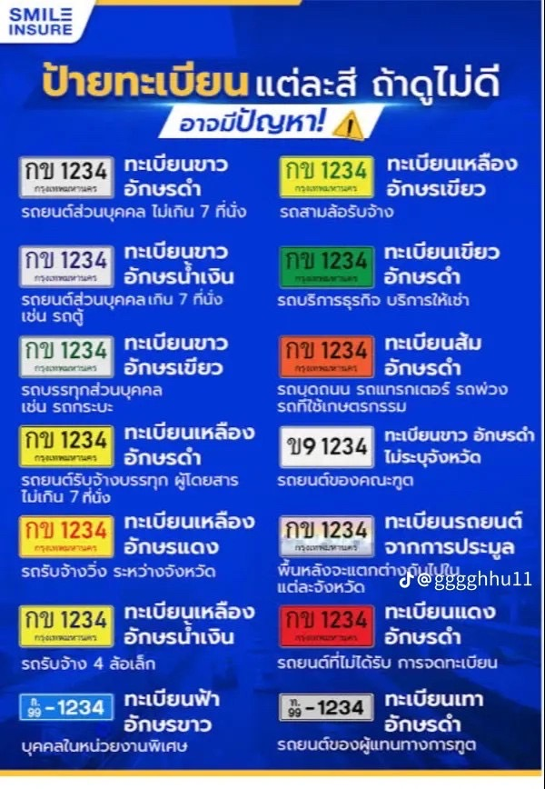
- รถตาม พ.ร.บ. รถยนต์ แบ่งออกเป็น 17 ลักษณะ ดังนี้
- รถยนต์นั่งส่วนบุคคลไม่เกิน 7 คน ป้ายสีขาวอักษรดำ
- รถยนต์นั่งส่วนบุคคลเกิน 7 คน ป้ายขาวอักษรฟ้า
- รถยนต์บรรทุกส่วนบุคคล ป้ายสีขาวอักษรสีเขียว
- รถยนต์สามล้อส่วนบุคคล ป้ายสีขาวอักษรสีแดง
- รถยนต์รับจ้างระหว่างจังหวัด ป้ายสีเหลืองอักษรสีแดง
- รถยนต์รับจ้างบรรทุกคนโดยสารไม่เกิน 7 คน (แท็กซี่) ป้ายสีเหลืองอักษรสีดำ
- รถยนต์สี่ล้อเล็กรับจ้าง ป้ายสีเหลืองอักษรสีฟ้า
- รถยนต์รับจ้างสามล้อ ป้ายสีเหลืองอักษรสีเขียว
- รถยนต์บริการธุรกิจ ป้ายสีเขียวอักษรสีขาว
- รถยนต์บริการทัศนาจร ป้ายสีเขียวอักษรสีขาว
- รถยนต์บริการให้เช่า ป้ายสีเขียวอักษรสีขาว
- รถจักรยานยนต์ ป้ายสีขาวอักษรสีดำ
- รถแทรกเตอร์ ป้ายสีแสดอักษรสีดำ
- รถบดถนน ป้ายสีแสดอักษรสีดำ
- รถใช้งานเกษตรกรรม ป้ายสีแสดอักษรสีดำ
- รถพ่วง ป้ายสีแสดอักษรสีดำ
- รถจักรยานยนต์รับจ้าง ป้ายสีเหลืองอักษรสีดำ
- นอกจากนี้ยังมีเครื่องหมายพิเศษ (ป้ายแดง) สำหรับติดรถเพื่อขายหรือเพื่อซ่อม
- ป้ายทะเบียนรถทูต ป้ายสีขาวอักษรสีดำ
- ป้ายทะเบียนกราฟิกสำหรับเลขทะเบียนสวยที่นำออกประมูล เป็นรูปทิวทัศน์แต่ละจังหวัด ตัวอักษรสีดำ
- รถตาม พ.ร.บ การขนส่งทางบก แบ่งออกเป็น รถโดยสารและรถบรรทุก โดยใช้แผ่นป้ายทะเบียนดังนี้
- รถโดยสารประจำทาง เลขทะเบียนขึ้นต้นด้วยเลข 10-19 ป้ายสีเหลืองอักษรสีดำ
- รถโดยสารขนาดเล็ก เลขทะเบียนขึ้นต้นด้วย 20-29 ป้ายสีเหลืองอักษรสีดำ
- รถโดยสารไม่ประจำทาง เลขทะเบียนขึ้นต้นด้วย 30-39 ป้ายสีเหลืองอักษรสีดำ
- รถบรรทุกไม่ประจำทาง พื้นแผ่นป้ายสีเหลือง เลขทะเบียนขึ้นต้นด้วย 70-79
- รถบรรทุกส่วนบุคคล พื้นแผ่นป้ายสีขาว เลขทะเบียนขึ้นต้นด้วย 80-89
วีซ่ามีกี่ประเภท อะไรบ้าง

- วีซ่าคือเอกสารสำคัญที่ใช้ในการขออนุญาตเดินทางเข้าประเทศต่างๆ เป็นส่วนใหญ่ ซึ่งมีหลายประเทศ เช่น
วีซ่าท่องเที่ยว
วีซ่าทำงาน หรือวีซ่าธุรกิจ เป็นต้น ซึ่งไม่ว่าจะเป็นวีซ่าประเภทไหน
ทางผู้เดินทางจำเป็นจะต้องรู้ขั้นตอนการขอวีซ่ามาเป็นอย่างดีก่อนเพื่อที่จะเพิ่มโอกาสผ่านวีซ่าให้มากขึ้น
และสำหรับใครที่สนใจอยากทำวีซ่าท่องเที่ยว วีซ่าธุรกิจ หรือวีซ่าเยี่ยมเยือน เพื่อเดินทางไปยังประเทศเอเชีย
ประเทศในกลุ่มเชงเก้น หรือประเทศยุโรป ก็สามารถติดต่อ Artralux เพื่อให้เราช่วยอำนวยความสะดวกแก่ท่านได้เลย
-
เมื่อรู้แล้วว่าวีซ่า (Visa) คืออะไร ให้มาดูเรื่องประเภทของวีซ่ากันต่อว่ามีอะไรบ้าง
โดยประเภทวีซ่าจะแบ่งจำแนกออกตามวัตถุประสงค์ในการเดินทางของผู้สมัครว่ามีความต้องการเดินทางไปยังประเทศนั้นๆ
ด้วย
วีซ่าคนเดินทางผ่านราชอาณาจักร (Transit Visa)
เริ่มต้นวีซ่าประเภทแรกกับวีซ่าคนเดินทางผ่านราชอาณาจักร หรือที่หลายคนมักเรียก วีซ่าเดินทางผ่าน
ซึ่งวีซ่าประเภทดังกล่าวคือวีซ่าที่จะออกให้กับผู้ที่จะเดินทางไปยังประเทศปลายทางแล้วจำเป็นต้องแวะเปลี่ยนเครื่องบินหรือยานพาหนะอื่นๆ
ในระหว่างทาง ให้สามารถอาศัยอยู่ได้ชั่วคราวในประเทศนั้นได้
วีซ่าท่องเที่ยว (Tourist Visa)
วีซ่าท่องเที่ยวคือหนึ่งในวีซ่าที่ได้รับความนิยมมากที่สุดอย่างหนึ่งเลยเมื่อเทียบจากวีซ่าประเภทอื่น
เพราะโดยส่วนใหญ่แล้วผู้ที่ขอวีซ่าท่องเที่ยวจะเป็นนักเดินทางหรือนักท่องเที่ยวที่อยากจะไปเยือนประเทศต่างๆ
ไม่ว่าจะเป็นประเทศในโซนเอเชีย โซนยุโรป และโซนอื่นๆ
รวมไปถึงในบางกรณีที่ผู้ขอวีซ่าอยากจะไปเยี่ยมเยือนคนรู้จักในประเทศนั้นๆ ซึ่งเราจะเรียกว่า Visitor Visa
วีซ่าธุรกิจ (Business Visa)
สำหรับใครที่มีแผนจะเดินทางเพื่อทำการติดต่อ ค้าขาย หรือมีส่วนเกี่ยวข้องกับการทำธุรกิจต่างๆ
จำเป็นที่จะต้องขอวีซ่าธุรกิจเพื่อใช้ในการเดินทางไปยังประเทศต่างๆ
โดยวีซ่าประเภทดังกล่าวจะต้องอาศัยเอกสารที่เกี่ยวข้องกับหน่วยงาน บริษัท หรือองค์กรสำหรับประกอบการขอวีซ่าด้วย
วีซ่าทำงานชั่วคราว (Temporary Worker Visa)
หากเป็นผู้ที่มีวัตถุประสงค์ในการเดินทางเพื่อทำงานเป็นระยะเวลาสั้นๆ หรือชั่วคราว
จะต้องเลือกขอวีซ่าทำงานชั่วคราว
ซึ่งแม้จะขั้นตอนการขอวีซ่าค่อนข้างยุ่งยาก แต่เมื่อได้รับการอนุมัติผลวีซ่าให้ผ่านเรียบร้อยแล้ว
วีซ่าทำงานชั่วคราวจะทำให้เจ้าของวีซ่าสามารถพำนักอาศัยอยู่ได้ยาวกว่าเมื่อเทียบกับการขอวีซ่าธุรกิจนั่นเอง
วีซ่านักเรียน (Student Visa)
ใครที่กำลังวางแผนจะศึกษาต่อต่างประเทศจำเป็นจะต้องใช้วีซ่านักเรียน
ซึ่งเป็นใบอนุญาตให้ชาวต่างชาติสามารถเดินทางเข้ามาในประเทศนั้นๆ เพื่อเข้าเรียนในสถาบันการศึกษาได้
โดยวีซ่านักเรียนยังสามารถแบ่งออกได้อีกหลาายประเภท อย่างเช่น วีซ่านักเรียน / นักศึกษา (Student Visa)
สำหรับผู้ที่เข้าศึกษาต่อในสถาบันหรือมหาวิทยาลัย หรือ วีซ่านักเรียนระยะสั้น (Short-term Student Visa)
เพื่อผู้ที่ต้องการศึกษาต่อในต่างประเทศเป็นระยะเวลาสั้นๆ
วีซ่าแต่งงาน / วีซ่าคู่สมรส (Marriage Visa)
กรณีที่มีคู่แต่งงาน หรือคู่สมรสเป็นผู้ถือสัญชาติอยู่ต่างประเทศ และต้องการจะเดินทางไปมาหาสู่
จะต้องมีวีซ่าแต่งงานเพื่อใช้ในการขออนุญาตเดินทางสู่ประเทศนั้นๆ โดยวีซ่าประเภทดังกล่าว
นอกจากทางผู้ขอวีซ่าจะต้องตระเตรียมเอกสารต่างๆ แล้ว
ทางคู่สมรสจะต้องมีการเตรียมเอกสารหรือหลักฐานที่เกี่ยวข้องตามที่ทางประเทศนั้นร้องขอด้วย
วีซ่าการทูต (Diplomatic Visa)
วีซ่าการทูตคือวีซ่าที่อนุญาตให้ผู้ปฏิบัติหน้าที่ทางราชการ หรือทำหน้าที่ทางการทูต
สามารถเดินทางเข้าภายในประเทศได้เป็นระยะเวลาชั่วคราว
โดยเอกสารที่ใช้ประกอบการขอวีซ่าการทูตนั้นจะต้องอาศัยหนังสือรับรองจากองค์กรหรือหน่วยงานที่สังกัดอยู่ด้วย
วีซ่าท่องเที่ยวและทำงาน (Work and Travel / Working Holiday Visa)
วีซ่าท่องเที่ยวและทำงานเป็นวีซ่าประเภทหนึ่งที่จะให้ผู้ขอวีซ่าสามารถเดินทางเพื่อท่องเที่ยวและทำงานไปพร้อมๆ
กันได้
ทั้งนี้ วีซ่าประเภท Working Holiday Visa และวีซ่าประเภท Work and Travel ยังมีความแตกต่างกันอยู่เล็กน้อย คือ
วีซ่า Working Holiday Visa จะมีไว้สำหรับผู้ที่จบการศึกษาในระดับอุดมศึกษา หรืตามเกณฑ์ที่กำหนด ในขณะที่ Work
and
Travel คือวีซ่าสำหรับผู้ที่กำลังศึกษาอยู่
วีซ่ารับ ณ ช่องทางอนุญาตของด่านตรวจคนเข้าเมือง (Visa on Arrival)
อย่างที่หลายคนรู้กันว่า ไม่ใช่ทุกประเทศที่จะต้องขอวีซ่า เนื่องจากประเทศเหล่านั้นเป็นประเทศ Free Visa นั่นเอง
อย่างไรก็ตาม ในบางประเทศนั้น แม้จะไม่ต้องมีวีซ่าเมื่อเดินทางออกนอกประเทศ แต่เมื่อเดินทางเข้าไปในประเทศแล้ว
ก็จำเป็นที่จะต้องขอวีซ่าตรงจุดด่านตรวจคนเข้าเมือง หรือวีซ่าประเภท Visa on Arrival หรือ วีซ่า VOA นั่นเอง
วีซ่าเกษียณอายุ (Retirement Visa)
วีซ่าผู้เกษียณ หรือวีซ่าเกษียณอายุ เป็นวีซ่าที่อนุญาตให้ผู้ที่สิ้นสุดช่วงอายุทำงาน
หรือไม่ได้ทำงานต่อแล้วสามารถขอวีซ่าประเภทดังกล่าว เพื่อขออนุญาตเดินทางเข้าประเทศนั่นเอง
โดยผู้ที่ขอวีซ่าเกษียณอายุจำเป็นต้องเตรียมเอกสารต่างๆ ตามที่ทางประเทศนั้นร้องขอด้วย
เชื่อว่าทุกคนคงจะได้รับความรู้กันไปอย่างครบถ้วนแล้วเกี่ยวกับวีซ่า (Visa) ไม่ว่าจะเป็น วีซ่าคืออะไร
วีซ่ามีกี่ประเภท มีอะไรบ้าง ทั้งนี้ สิ่งที่ควรรู้ในขั้นตอนถัดมาก็คือขั้นตอนการขอวีซ่านั่นเอง
โดยผู้ที่ต้องการขอวีซ่านั้น จะต้องทำตามขั้นตอนต่างๆ ตามที่สถานทูตฯ หรือหน่วยงานที่เกี่ยวข้องเป็นผู้ร้องขอ
ซึ่งหลักๆ แล้วก็คือการทำเรื่องนัดหมายล่วงหน้าเพื่อยื่นคำร้องขอวีซ่า ก่อนที่จะทำการตระเตรียมเอกสารต่างๆ
ให้พร้อม
เพื่อยื่นให้ทางสถานทูตฯ หรือศูนย์ยื่นวีซ่าซึ่งเป็นผู้ให้บริการด้านวีซ่าที่ได้รับการแต่งตั้งจากประเทศนั้น
แล้วจึงรอผลการพิจารณาเป็นระยะเวลาหนึ่ง
เท่านี้ก็รู้ผลวีซ่าและสามารถเดินทางมารับหนังสือเดินทางที่มีตราประทับของวีซ่าได้เลยทันที
🛠 งานที่ต่างด้าวห้ามทำ
- ค้าขายหน้าร้าน
- ขับรถแท็กซี่
- ทำผม/ตัดผม/เสริมสวย
- งานเก็บของตามบ้าน
- เพิ่มเติมตามภาพ⬇️
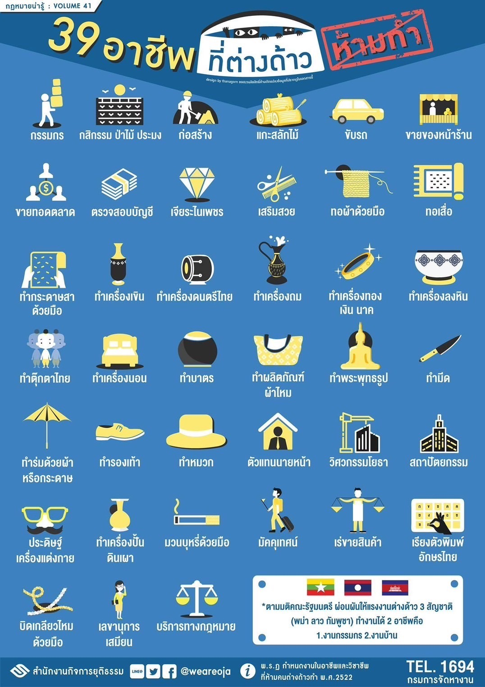
📜 กฎหมายที่เกี่ยวข้อง
มาตรา 12 พ.ร.บ.คนเข้าเมือง ระบุว่าห้ามบุคคลต่างด้าวเข้ามาทำงานโดยไม่ได้รับอนุญาต มีโทษปรับและจำคุก
👀 วิธีสังเกตพฤติกรรมน่าสงสัย
- เดินวนซ้ำจุดเดิม
- มีการหลบกล้องวงจรปิด
- ไม่ให้ถ่ายภาพหรือพูดจาเบี่ยงเบน
💊 ยาเสพติด
พบการรวมกลุ่มผิดปกติ มีพฤติกรรมหลบซ่อน ส่งของผ่านพัสดุแบบลับๆ หรือมีอุปกรณ์เกี่ยวกับการเสพยาในพื้นที่

💰 เงินกู้นอกระบบ
ผู้ให้กู้อาจเรียกดอกเบี้ยเกินกว่ากฎหมายกำหนด ใช้วิธีข่มขู่ หรือบังคับให้ชำระหนี้โดยมิชอบ เช่น ข่มขู่ถึงบ้าน
ทำลายทรัพย์สิน หรือใช้บุคคลในลักษณะทวงหนี้ผิดกฎหมาย
- อัตราดอกเบี้ยที่สูงผิดปกติ เช่น ร้อยละ 10 ต่อวัน
- ไม่มีสัญญาเป็นลายลักษณ์อักษร
- ข่มขู่คุกคามลูกหนี้หรือครอบครัว
- ใช้คนกลางหรือมือปืนในการติดตามทวงหนี้
หากพบพฤติกรรมเหล่านี้ สามารถแจ้งความหรือขอความช่วยเหลือจากเจ้าหน้าที่ตำรวจได้ทันที
🪙 ของเก่า / รับซื้อผิดกฎหมาย
ร้านที่รับซื้อของโจร เช่น ทอง ปืน สายไฟฟ้า โดยไม่ตรวจสอบที่มาของสินค้า

🏴☠️ วิเคราะห์หมายจับ
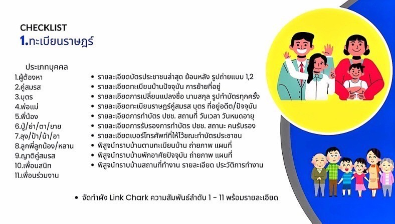
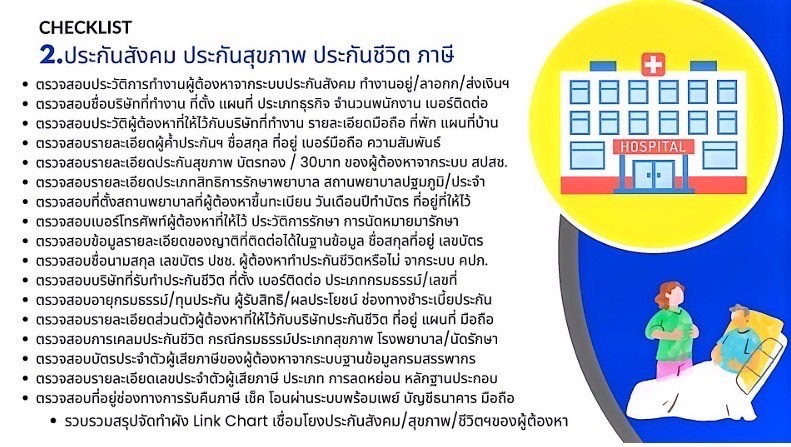
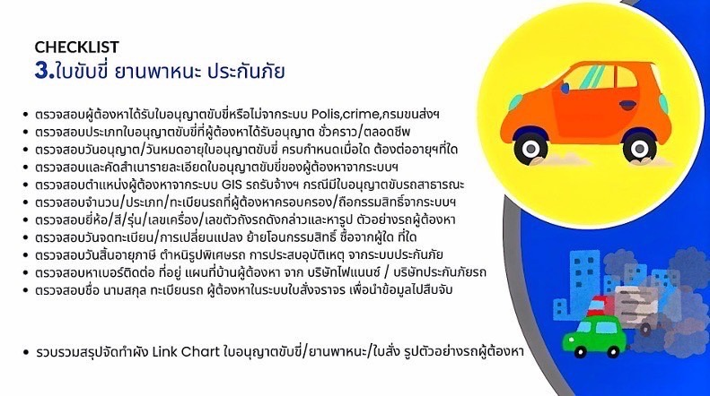
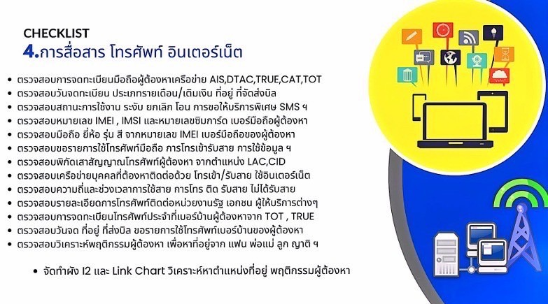
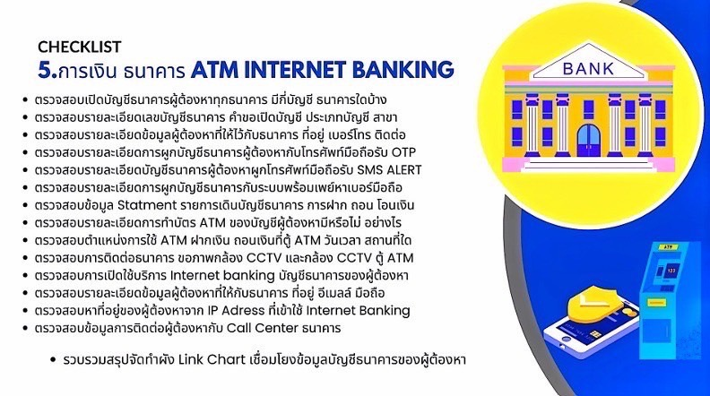
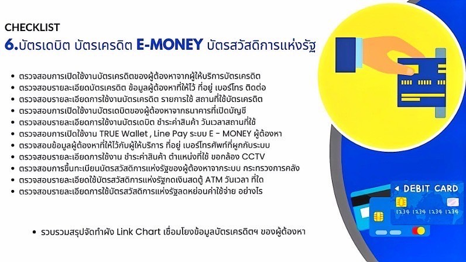
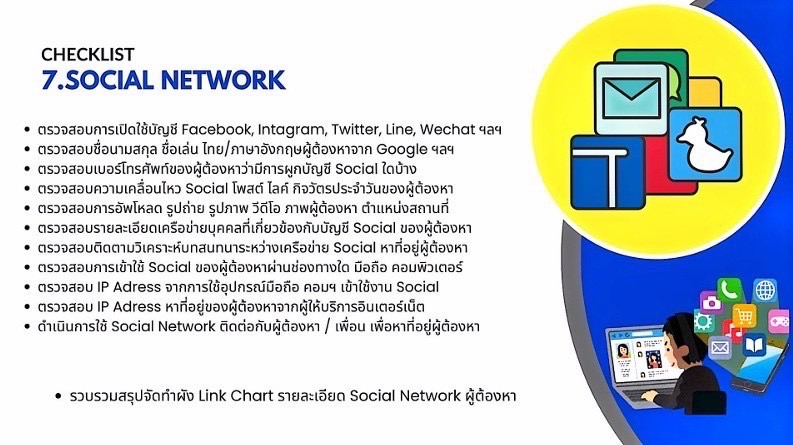
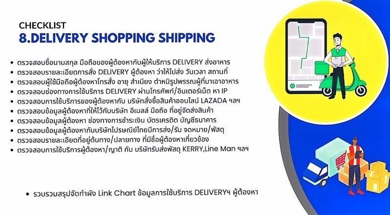
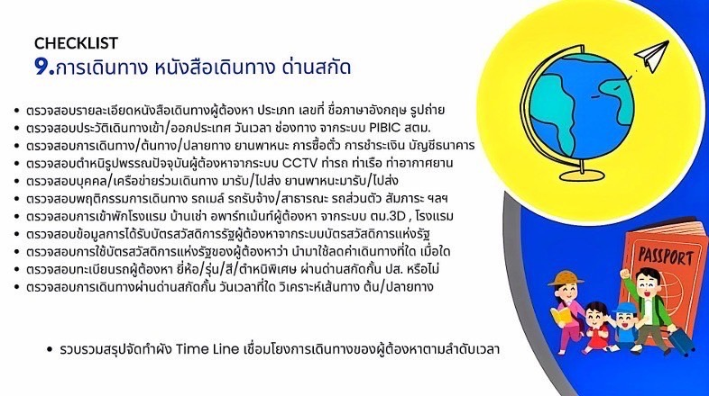
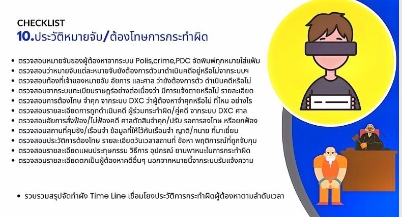